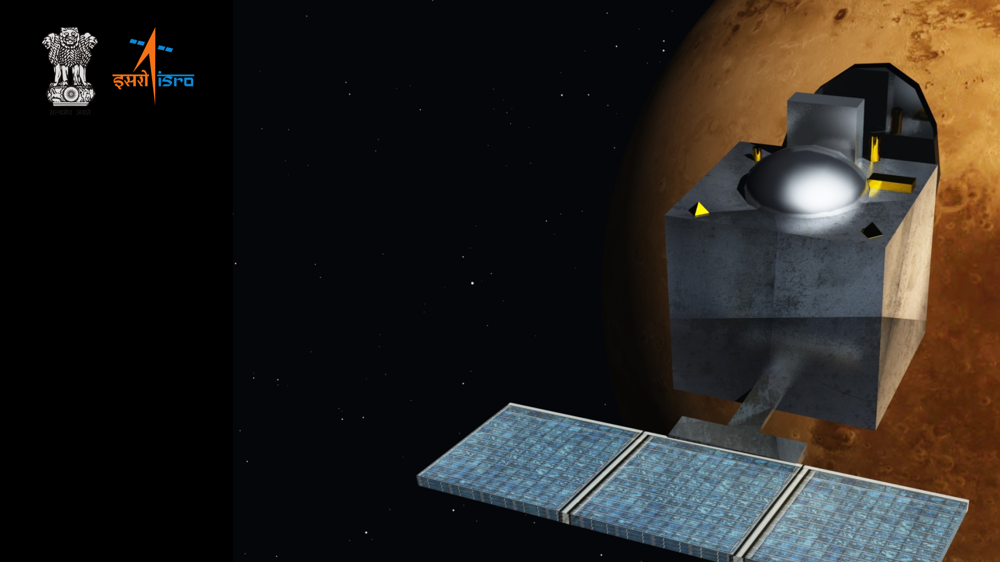

BREATHETAKING PICTURES OF
MARS

Marking India's first venture into the interplanetary space, MOM will explore and observe Mars surface features, morphology, mineralogy and the Martian atmosphere. Further,a specific search for methane in the Martian atmosphere will provide information about the possibility or the past existence of life on the planet. The enormous distances involved in interplanetary missions present a demanding challenge; developing and mastering the technologies essential for these missions will open endless possibilities for space exploration. After leaving Earth, the Orbiter will have to endure the Interplanetary space for 300 days before Mars capture.

MOM was launched aboard PSLV C-25,which was an XL variant of the PSLV, one of world's most reliable launch vehicles. The XL variant was earlier used to launch Chandrayaan (2008),GSAT-12 (2011) and RISAT-1 (2012).

Based on the I-1-K satellite bus of ISRO that has proved its reliability over the years in Chandrayaan-1 and theIRS and INSAT series of satellites, the MOM spacecraft carries 850 kg of fuel and 5 science payloads.

The Mars Mission was envisaged as a rendezvous problem, wherein the Mars orbiter is manoeuvred into a departure hyperbolic trajectory, escapes the SOI of Earth and thereafter enters the SOI of Mars.


.jpg)


.png)